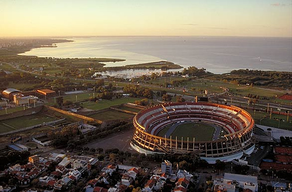
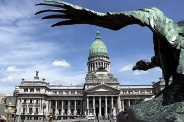
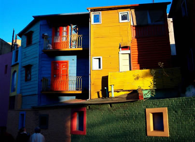
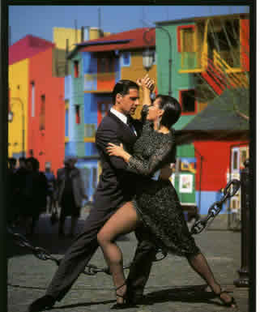
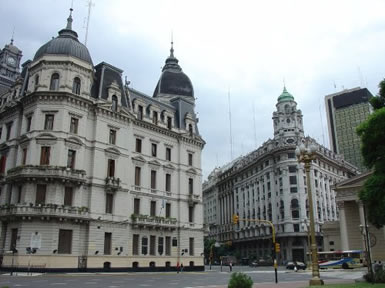
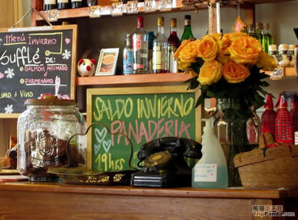
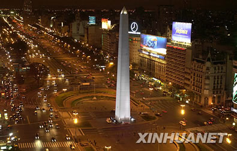

布宜诺斯艾利斯（Buenos Aires）
» 有这么一个国度，那儿有着湛蓝的天、纯白的云和金色的太阳，那儿的探戈和足球令人陶醉，沸腾，魂牵梦绕……
- 布宜诺斯艾利斯（Buenos Aires）阿根廷首都和政治、经济、文化中心，享有“南美洲巴黎”的盛名。在西班牙语中意为“好空气”。它东临拉普拉塔河，西靠“世界粮仓”潘帕斯大草原，风景秀美，气候宜人。海拔25米，地处南回归线以南，气候温暖，终年无雪。四季温差不大。年平均降水量为950毫米。布宜诺斯艾利斯面积约200平方公里，人口则有1383万人(2001年) ，约占全国人口的1／3以上，是南半球仅次于圣保罗的第二大城市。。

- 布宜诺斯艾利斯作为西班牙殖民地中心近300年之久，1816年阿根廷独立时被定为首都。现已跻身于世界特大城市之列。它是一座十分欧化的城市，不仅城市居民几乎都是欧洲移民的后裔，而且城市布局、街景以及居民的生活方式、风俗习惯、文化情趣，处处显露出欧洲风情。

- 布宜诺斯艾利斯市内绝大多数广场、街道、公园、博物馆、纪念碑和塑像，都用重大历史事件和著名历史人物命名。市中心的街道纵横交错。南部的圣特尔莫和蒙特塞拉区街道狭窄，还保留着几个世纪以前的西班牙和意大利风格的古老建筑。市区东部街道宽阔，高楼林立，周围点缀着草坪、花坛。布宜诺斯艾利斯以街心公园、广场和纪念碑众多而著名。

- “探戈”是阿根廷的国舞，具有“探戈之城”之称的布宜诺斯艾利斯是个新移民很多的城市，生活不易的社会中下阶层的人，为转移生活中的痛苦，发展出探戈音乐。新移民里包括来自欧洲和非洲，文化背景大不相同的人，也因此不论在弦律、节奏、乐器等方面，探戈都融合了各种文化的特色。最早的探戈主题多半是关于妓女和其身边的男人，而这些多半歌词淫秽。到了1912，主题日渐丰富。二十世纪初，探戈在巴黎造成流行，这也使得探戈的身份地位大不相同，开始进入上流社会。自1885年在布宜诺斯艾利斯市南的博加港诞生以来，广泛流传，风靡世界各大城市，从大众化的歌舞形式发展成登上大雅之堂的高雅艺术。 阿根廷出了许多有名的探戈歌手，如贾岱尔（Carlos Gardel）、皮亚索拉（Astor Piazzola）等。经过多年，探戈仍然在阿根廷处处可见。在阿根廷的大部分城市里，都有教导探戈的专门学校。发源于阿根廷农工阶级的探戈，现在可是全世界人们的宠儿。

- 现在，穿过这里的大街小巷，就能看见一对对舞蹈着的街头探戈，让观看者如痴如醉。探戈的老家在布宜诺斯艾利斯，可却没有人说得清它的确切来源。只知道出现在19世纪末的大移民年代，混合了西班牙佛拉明戈舞的热烈、非洲风的节奏起伏、哀伤的旋律。
TOP
> 南美洲 > 阿根廷 > 布宜诺斯艾利斯....
历史 地理 购物 文化
收起布宜诺斯艾利斯（Buenos Aires）阿根廷首都和政治、经济、文化中心，享有“南美洲巴黎”的盛名。在西班牙语中意为“好空气”。它东临拉普拉塔河，西靠“世界粮仓”潘帕斯大草原，风景秀美，气候宜人。海拔25米，地处南回归线以南，气候温暖，终年无雪。年平均气温16.6摄氏度左右。四季温差不大。年平均降水量为950毫米。

五月广场
- 近年来，阿根廷已成为南美最大的旅游国家，主要旅游点有巴里洛切风景区、伊瓜苏大瀑布、莫雷诺冰川等
←点击欣赏伊瓜苏大瀑布
- 布宜诺斯艾利斯最繁华盛顿佛罗里达大街是一条步行商业街。这条商业街长不足2千米，狭窄而又拥挤，但国内一些著名品牌的老商号全都聚集在这里，还有伦敦、巴黎等世界上许多著名的大公司设立的分号。五光十色的商品琳琅满目，舞厅、夜总会、饭馆、影剧院等随处可见，终日熙熙熙攘攘，热闹非凡，号称“南美百老汇”。市内旧区Sal Telmo的Plaza Dorrego，每逢星期日宛如时光倒流，在古老建筑包围下摆设的古董摊档，留声机、旧电话、手表、水晶灯等等应有尽有，平时只在博物馆看得到的陈年珍品，在此你都可以看到摸到


- 在布宜诺斯艾利斯老城区的圣特尔莫区是个有着几百年历史的文化街区，近年来成为旅游热点地区之一。每逢星期天，这个街区的多雷戈广场周围的街道被为步行街，许多艺人前来表演助兴。看夜场电影是多数人的首选娱乐项目，布宜诺斯艾利斯全市共有135家电影院，分布在城市各区。但是人们最喜欢到市中心的拉瓦列街看电影。这是一段数百米的步行街，两边集中了十五六家电影院，另外还有几家著名的餐馆和咖啡馆、快餐店
©2011 黄杨 QQ407786839